Take-Home Exercise 1
The following is my submission for Take-Home Exercise 1.
Dataset
The dataset used in this take-home exercise was downloaded from the following link, below the sub-section of Population Trends: https://www.singstat.gov.sg/find-data/search-by-theme/population/geographic-distribution/latest-data
We are using the Singapore Residents by Planning Area / Subzone, Age Group, Sex and Floor Area of Residence, June 2022.csv for this exercise. Once downloaded and unzipped, there are two files that are contained in this folder; one for the raw dataset and one for the notes of the dataset (similar to a readme file).
Unzipped folder:
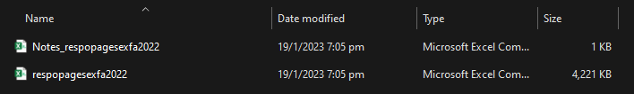
Dataset:
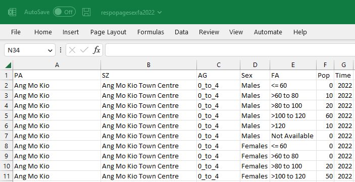
Notes of Dataset:
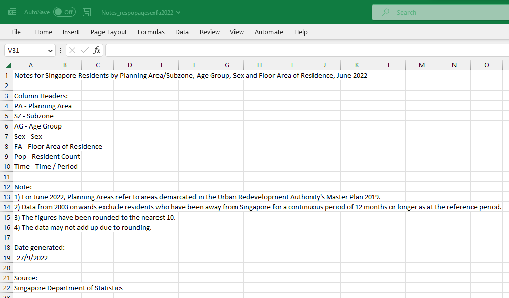
Preparation Steps
Please find below a reproducible description of the procedures used to prepare and create the analytical visualization in Tableau Desktop.
| No. | Step | Screenshot |
| 1 | In Tableau Desktop, in the Data Source pane, click on “Text file”. When prompted to choose a file, click on the raw dataset. |
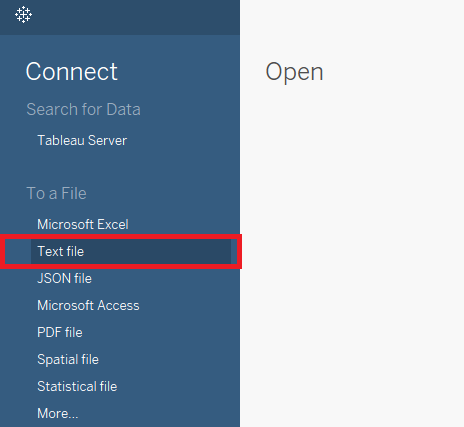 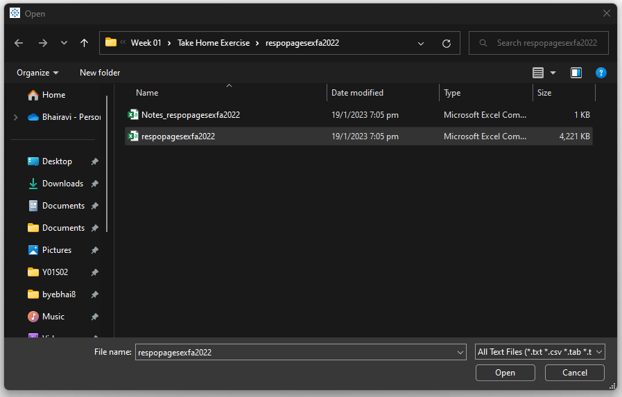 |
| 2 | Let’s change the data source name to: Planning Area - Jun 2022. Let’s also change the field names according to the Notes of Dataset csv file. |
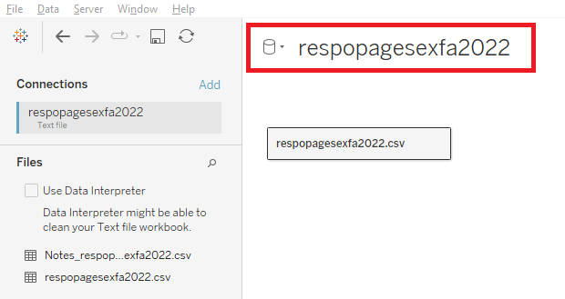 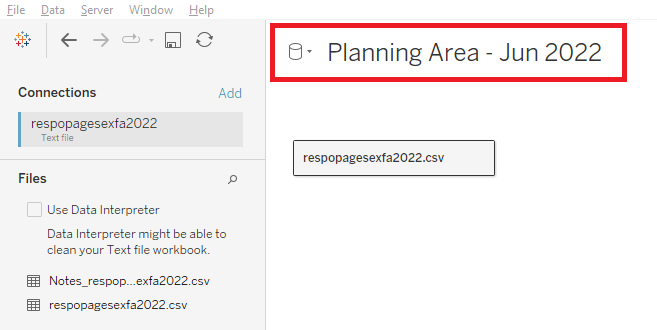 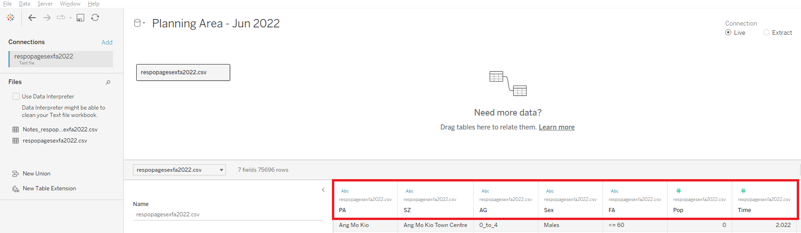 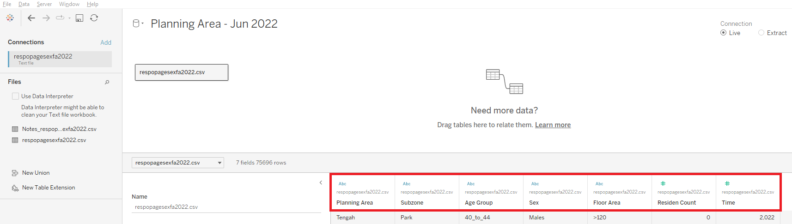 |
| 3 | The field Time has been identified to be a numerical field. However, this is incorrect as it is supposed to reflect the Year of the record. Let’s change Time field’s datatype to Date. |
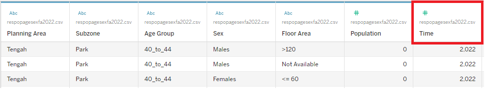 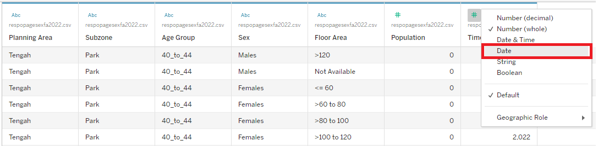 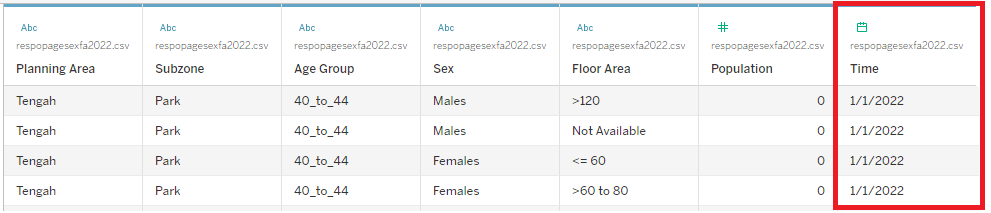 |
| 4 | Let’s create two calculated fields to distinguish the populations by gender. Create a calculated field called Male Population and Female Population. |
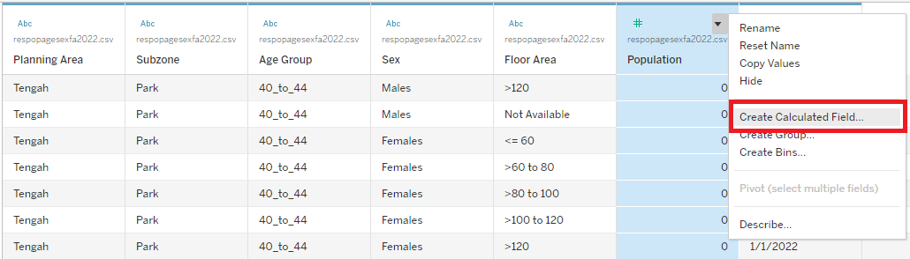 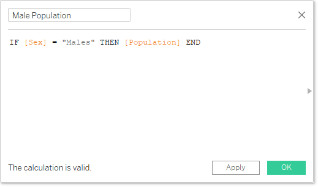 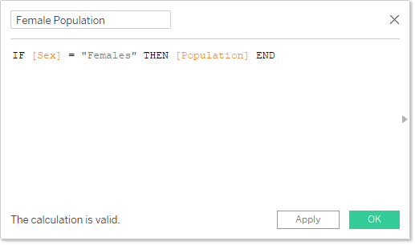 |
| 5 | Let’s group the values in the Age Group field into bins of 15 to simplify our analysis. | 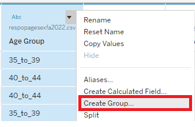 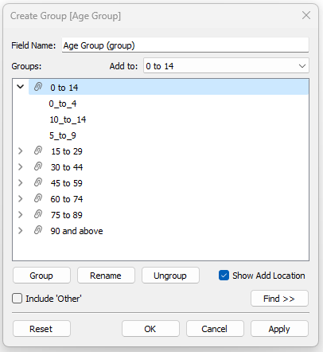 |
| 6 | To show only 9 Planning Areas in our view, let’s filter the data source to only keep the Top 9 Planning Areas based on the total population. Click on “Add” to add a new data source filter. In the Data Source Filters popup, click on “Add” to add a new filter for the Planning Area field. When prompted to choose which values to keep, select the tab “Top”, and the radio button “By field” to choose the Top 9 by Population Sum. Click on “Ok” to close the popup. Click on “Ok” again to close the Data Source Filters popup. |
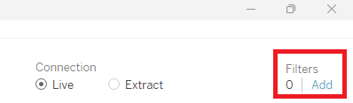 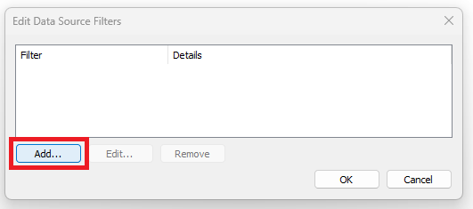 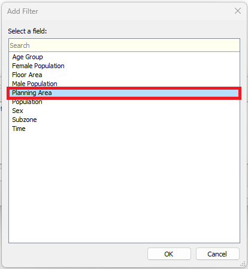 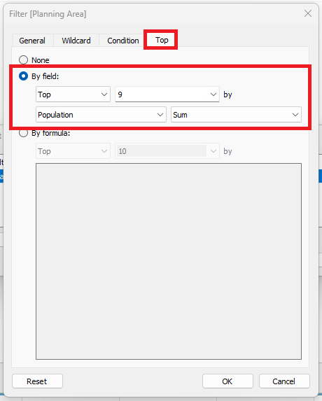 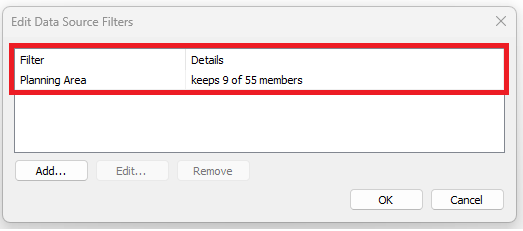 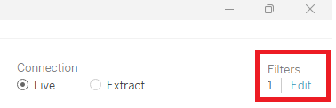 |
| 7 | Now, let’s build the visualization in “Sheet 1”. Let’s create two calculated fields; one for columns and one for rows, to build a 3 by 3 matrix. Drag Columns and Rows fields to the Column and Row panes respectively. The view will look like a quadrant. Switch the Columns and Rows fields from Continuous to Discrete. The view will be updated to a table. |
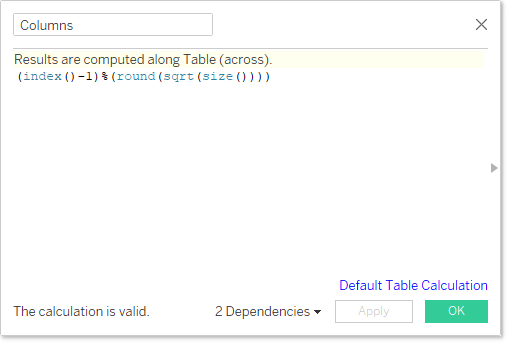 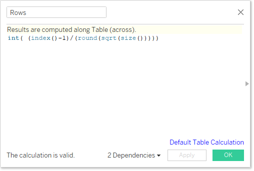 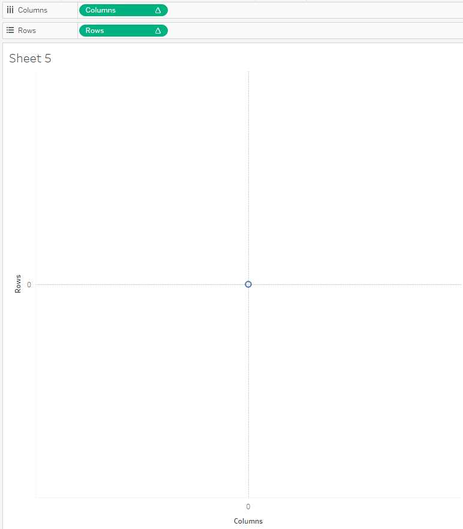 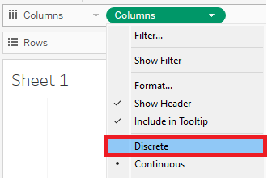 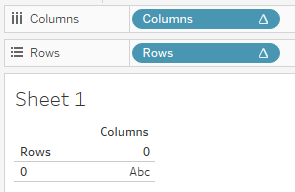 |
| 8 | Drag the two calculated fields we created (Male Population & Female Population) to the Columns pane. Drag the Age Group (Group) field to the Rows pane. |
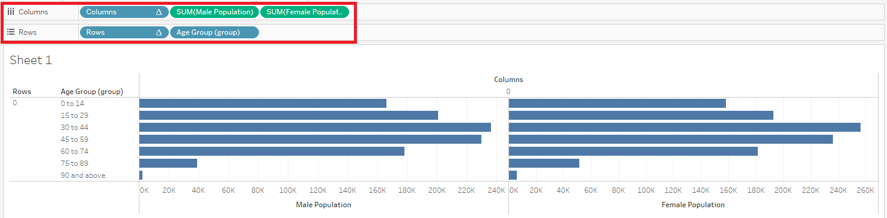 |
| 9 | Right click on the axis for Male Population field and select “Edit Axis”. In the popup, under the section “Scale”, tick the check-box for “Reversed”. |
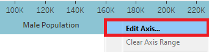 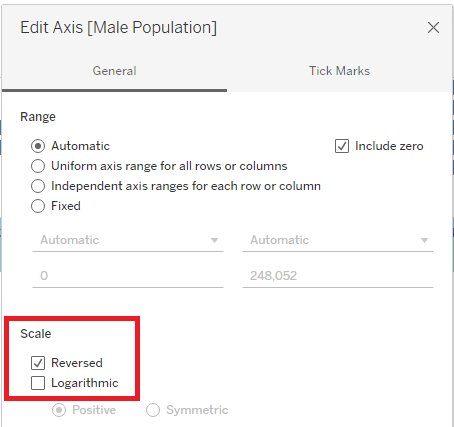 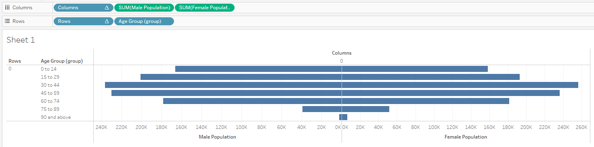 |
| 10 | Drag the Planning Area field into the Details section of the All marks card. | 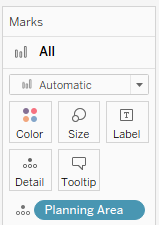 |
| 11 | Let’s update how the calculated fields Columns and Rows are computed - which should be based on the Planning Area field. | 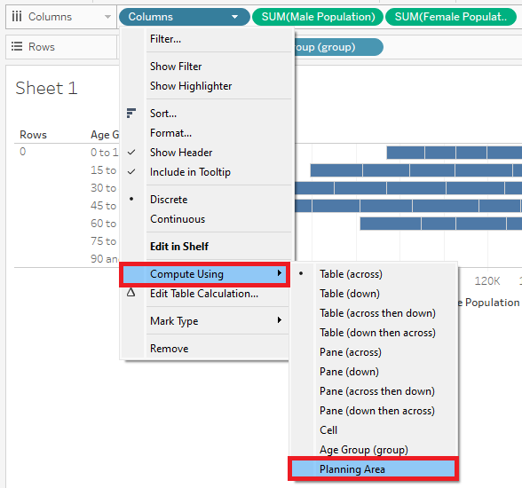 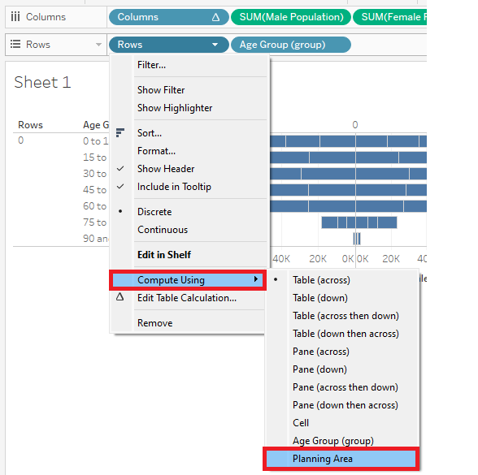 |
| 12 | In the marks card for Male Population field, change the color to teal. Similarly, in the marks card for Female Population field, change the color to red. |
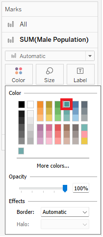 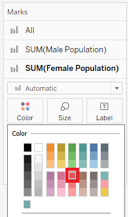 |
| 13 | Let’s change the view from”Standard” to “Entire View” to spread out our display. | 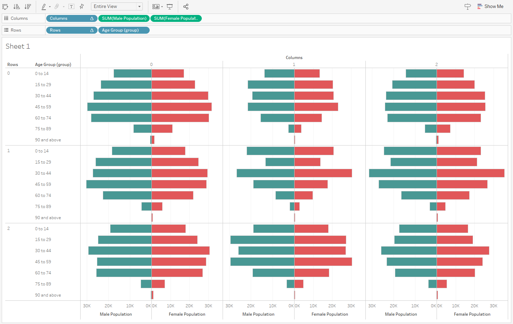 |
| 14 | Let’s remove the axis headers for both Male Population and Female Population fields. Right click on the axis header and un-check “Show Header” for either of the axis. Let’s also remove the header for the Columns and Rows fields. Un-check “Show Header” for both these fields. |
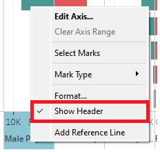 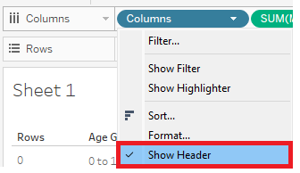 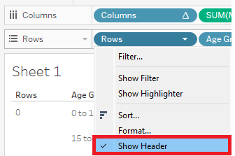 |
| 15 | Under the marks card for All, drag the slider to reduce the size of the bars till the recommended size (indicated by a pipe). | 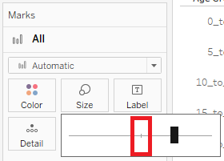 |
| 16 | To format grid line, right click on the view and select the “Format” option. In the format panel, click on the icon for grid lines. Under the tab “Columns”, set Grid Lines to None. |
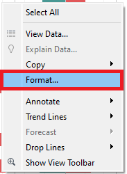 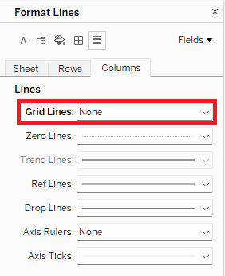 |
| 17 | For the male population marks card, let’s drag the SUM(Male Population) field to the label section. Right click on the SUM(Male Population) field in the marks card and click on “Format”. In the format panel, click on “Pane”. Under the “Numbers” option, select “Custom”. Change the number of decimal places to 0 and the display units to thousands. Repeat the same for the SUM(Female Population) field. |
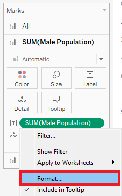 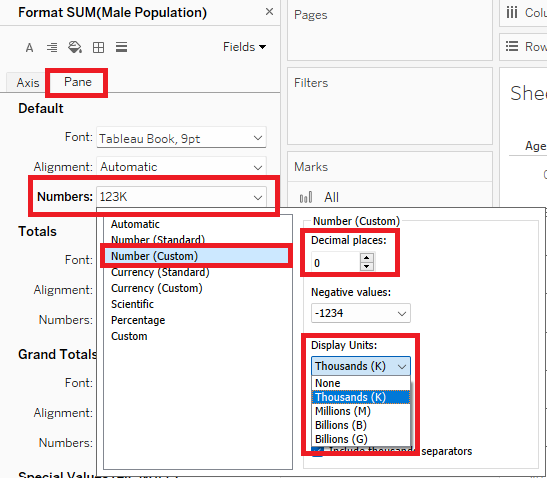 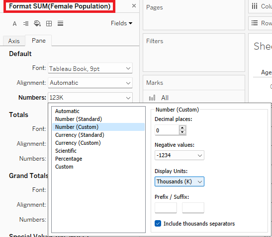 |
| 18 | Right click on Age Group (Group) field in the Rows pane and select “Sort”. In the popup, change the sort order to “Descending”. |
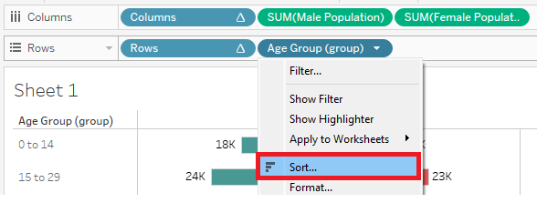 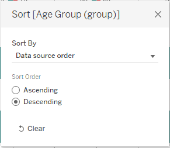 |
| 19 | Right click the Planning Area field in the marks card for All and select “Sort”. Let’s sort by Sum of Population in Descending Order. |
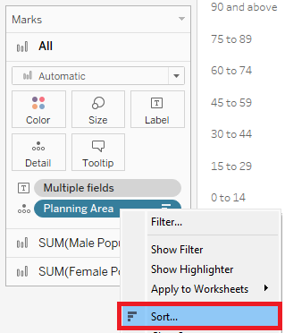 |
| 20 | To bring the Planning Area field as a text label for this view, let’s create a calculated field called dummy. | |
| 21 | Bring this new calculated field, dummy, into the view on the Columns panel. Ensure that the dummy field is taking the AVG and not the SUM. Make this dummy field a dual axis with the Female Population field. Right click on the axis header for the dummy field and click on “Synchronize Axis”. |
|
| 22 | Now, let’s format this dummy field. Right click on the dummy field’s axis header and un-check “Show Header”. Let’s also un-check “Show Header” for the Female Population field. |
|
| 23 | Let’s remove the measure names field from the colors section in the marks card for both the dummy and Female Population fields. | |
| 24 | Let’s also reduce the size of the bars for the dummy field to the smallest possible size. | |
| 25 | Make the dummy field’s color to be completely opaque with no borders. | |
| 26 | Change the type of mark from “Bar” into “Circle” for the dummy field. Then, drag the Planning Area field into the text section in the marks card. |
|
| 27 | Format the text label to be bigger and bold, as well as center-aligned. Now we have a clean and insightful view that is ready for analysis! |
Discussion of Analysis
So, what can we learn from this visualization that we built in Tableau Desktop?

Firstly, when we look at the Top 9 Planning Areas, namely Bedok, Tampines, Jurong West, Sengkang, Woodlands, Hougang, Yishun, Chua Chu Kang and Punggol, there is one thing that is common. They are all HDB Residential Areas.
Let us now analyse this view by the Age Groups. Across the Planning Areas, a key thing to note would be that Bedok is the only area which has at least 1K population for both Males and Females who are above the age of 90. Moreover, they also have the highest population of both Males and Females who are between the ages of 75 and 89. From this, we can deduce that Bedok hosts one of the highest populations of elderly who are above the age of 75.
If we look at the opposite spectrum in the Age Group, both Sengkang and Punggol seem to have the largest population of Males and Females between the ages of 0 to 14. This could indicate that these Planning Areas are most likely to host younger families who are raising children and adolescents.
There are only 2 out of these 9 Planning Areas, namely Sengkang and Punggol, which have a higher population in the age group of 0 to 14 as when compared to the age group of 15 to 29. Meaning they have more people below the age of 14 than in the ages between 15 to 29. Whereas, for the other 7 Planning Areas, this is the opposite, indicating a low fertility rate in general.
When looking at Age Groups and Planning Areas, one section that stands out would be the Planning Area of Punggol. This is because it is notable that the population between the ages of 30 to 44 is almost the double of the population between the ages of 15 to 29. This is something that we could further analyse as a future work.
Moving on to the breakdown by Gender, we can determine that there are more Males than Females in the ages between 0 to 14 across all the Top 9 Planning Areas. On the other hand, there are more Females than Males in the ages between 30 to 44 across all the Top 9 Planning Areas.
Last but not least, in overall, the populations across these Planning Areas seems to be a well distributed for both genders. This implies that we have a reasonably good gender equality in our Top 9 Planning Areas.
This concludes the work submitted for Take-Home Exercise 1. Thank you!